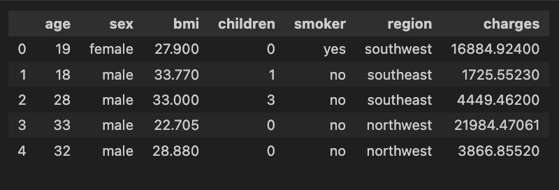

Predicting Insurance: Linear Regression
Built a predictive model to estimate individual medical insurance charges based on demographics and lifestyle factors, using EDA and regression modeling.
The Problem: What Did I Solve?
In the healthcare insurance industry, accurately pricing premiums is crucial. Overpricing may drive away potential customers,
underpricing can harm the company's bottom line. The goal of this project was to explore how individual demographics and habits
affect medical insurance charges, and whether we can predict future charges using these features.
But there's a twist: the original "charges" data is highly skewed, and not all features contribute equally. This project goes beyond
building a model, it uncovers hidden relationships and tells a story about how lifestyle choices (like smoking) can impact costs.
Dataset preview
Who Is This For?
This project is built for:
- Insurance Analysts: to support underwriting and pricing decisions.
- Healthcare Policy Strategists: to identify high-risk populations.
- Machine Learning Learners: to understand the value of EDA and preprocessing.
It’s also a portfolio piece that shows how I think as a data analyst, how I explore a messy dataset, decide what's worth modeling, and explain results clearly.
My Approach- Step by Step
1. Understanding the Data
The dataset used is from Kaggle, representing individuals’ medical and personal attributes:
- Age, gender, BMI, number of children
- Smoking status
- Geographic region
- Medical charges
Before building any model, I asked:
- Are the features balanced?
- Are there missing values?
- How is the target distributed?
The charges column (our outcome) is highly skewed. That’s a red flag in regression — where we assume errors are normally distributed.
Histogram of charges: Below screenshot shows the heavy right skew, motivating a log transformation.
Histogram of log_charges:To address this skew, I applied a log2 transformation on charges, making
the variable better suited for regression.
2. Feature Selection & Visualization
EDA isn’t just about visuals, it’s about interrogating the data. I asked:
- Do age and charges rise together?
- Do smokers have higher costs?
- Does gender or region matter?
Findings:
- Smokers have drastically higher charges.
- Age and BMI correlate positively with charges.
- Gender and region? Not much difference.
Heatmap of correlations: Demonstrates which variables most influence charges.
Boxplots of log_charges by gender, smoker, and region.
The insight? We don’t need every variable. I focused on:
- age
- bmi
- is_smoker
This avoids overfitting and makes the model more interpretable.
3. Data Transformation
Good data analysts know that how you shape your data affects what it can reveal. And, I engineered a new feature:
insurance["is_smoker"] = (insurance["smoker"] == "yes")
This binary transformation simplifies model interpretation and increases accuracy.

4. Model Building
Using linear regression, I trained a model on:
X = insurance[["age", "bmi", "is_smoker"]]
y = insurance["log_charges"]
Split: 75% training, 25% testing.
The output?
- R² Score: ~0.75 (good explanatory power)
- MSE (log scale): 0.448
- MSE (original scale): 1.57 (when reversed from log)
Coefficients table and R²/MSE results

What Business Questions Did This Project Answer?
- Which factors most influence insurance charges?
→ Smoking, age, and BMI are major cost drivers. - Can we reliably forecast insurance charges using customer info?
→ Yes, especially when charges are log-transformed. - Are there clear segments that insurers should watch?
→ Smokers and older individuals with high BMI consistently show higher costs.
Tools & Techniques
- Python (Pandas, NumPy)
- Libraries: Pandas, Seaborn, Matplotlib, Scikit-learn
- Data Source: Kaggle
Key Takeaways
- EDA isn’t just step one, it’s where the real story starts.
- Feature transformation (e.g., is_smoker, log_charges) is critical in real-world messy data.
- Predictive modeling works best when paired with explanatory storytelling.